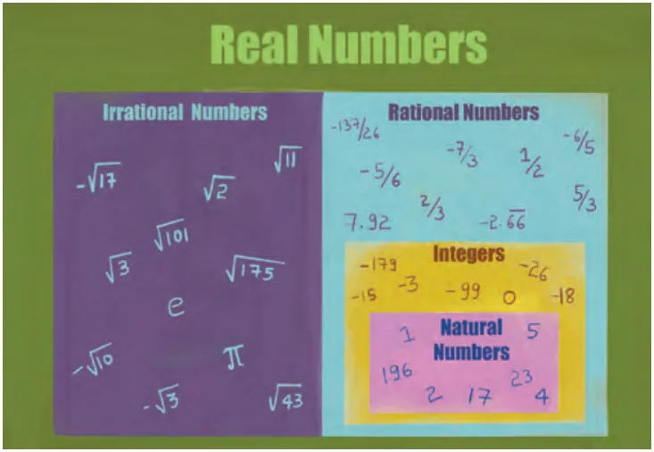
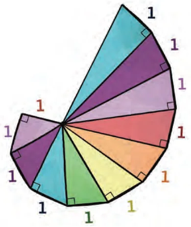

We have travelled an immense distance. From the simple notches carved into the Ishango bone to track the passing days, to the profound philosophical void of Śhūnya in ancient India. We crossed the threshold of zero into the realm of debts and negative numbers with Brahmagupta. We found that the space between numbers is infinitely dense with fractions, yet fundamentally interspersed with the infinite-nonrepeating-decimal irrational numbers like \(\sqrt{2}\) and \(\pi\). By uniting the rational and the irrational, we built the continuous, unbroken Real Number Line. Every length, every temperature, every real physical measurement in the known universe has a home on this line.
The Evolution of Our World of Numbers
Our world of numbers has grown in stages over thousands of years, to meet the needs of humanity:
- Natural Numbers (\(\mathbb{N}\)): The basic counting numbers {1, 2, 3, ...}. These are contained in the collection of integers.
- Integers (\(\mathbb{Z}\)): These include also zero and the negative numbers {..., \(-2\), \(-1\), 0, 1, 2, ...}. These in turn are contained in the collection of rational numbers.
- Rational Numbers (\(\mathbb{Q}\)): These include all fractions \(\frac{p}{q}\), where \(p\), \(q\) are integers and \(q \ne 0\). They also correspond to those numbers with terminating decimals like 0.135 and repeating decimals like \(0.\overline{142857}\).
- Irrational Numbers (\(\mathbb{I}\)): These are separate from the above. They are numbers that cannot be written as fractions (e.g., \(\sqrt{2}\), \(\pi\), \(\sqrt{10}\)) and do not have terminating or repeating decimals.
- Real Numbers (\(\mathbb{R}\)): Together, the rational and irrational numbers make up the entire real number line.

Fig. 3.13
Is the journey over? Are there more numbers waiting to be discovered beyond the Real Number line?
Think and Reflect
Consider this puzzle: What is the square root of \(-1\)? We know that \(1 \times 1 = 1\). We also know that \((-1) \times (-1) = 1\). There is no Real Number that, when multiplied by itself, results in a negative number. Thus, \(\sqrt{-1}\) cannot exist on number line.
To solve this, mathematicians stepped completely off the line and invented a new dimension of numbers, denoted by the letter \(i\), standing for Imaginary Numbers. While they sound like fiction, they are essential for modern electrical engineering, quantum mechanics, and the technology that powers your mobile phone. But that is a journey for another year. For now, master the Real Numbers. The universe is largely written in their language.
End-of-Chapter Exercises
- Convert the following rational numbers in the form of a terminating decimal or non-terminating and repeating decimal, whichever the case may be, by the process of long division:
(i) \(\frac{3}{50}\) (ii) \(\frac{2}{9}\) - Prove that \(\sqrt{5}\) is an irrational number.
- Convert the following decimal numbers in the form of \(\frac{p}{q}\):
(i) \(12.6\) (ii) \(0.0120\) (iii) \(3.0\overline{52}\) (iv) \(1.2\overline{35}\) (v) \(0.\overline{23}\) (vi) \(2.0\overline{5}\) (vii) \(2.12\overline{5}\) (viii) \(3.12\overline{5}\) (ix) \(2.\overline{1625}\) - Locate the following rational numbers on the number line.
(i) 0.532 (ii) \(1.1\overline{5}\) - Find 6 rational numbers between 3 and 4.
- Find 5 rational numbers between \(\frac{2}{5}\) and \(\frac{3}{5}\).
- Find 5 rational numbers between \(\frac{1}{6}\) and \(\frac{2}{5}\).
- If \(\frac{x}{3} + \frac{x}{5} = \frac{16}{15}\), find the rational number \(x\).
- Let \(a\) and \(b\) be two non-zero rational numbers such that \(a + \frac{1}{b} = 0\). Without assigning any numerical values, determine whether \(ab\) is positive or negative. Justify your answer.
- A rational number has a terminating decimal expansion whose last non-zero digit occurs in the 4th decimal place. Show that such a number can be written in the form \(\frac{p}{10^4}\), where \(p\) is an integer not divisible by 10. Is it necessary that the denominator of this rational number, when written in the lowest form, is divisible by \(2^4\) or \(5^4\)? Give reasons.
- Without performing division, determine whether the decimal expansion of \(\frac{18}{125}\) is terminating or non-terminating. If it terminates, state the number of decimal places.
- A rational number in its lowest form has denominator \(2^3 \times 5\). How many decimal places will its decimal expansion have? Explain your answer.
- *Let \(a = \frac{7}{12}\) and \(b = \frac{5}{6}\). Express both \(a\) and \(b\) in the form \(\frac{k_1}{m}\) and \(\frac{k_2}{m}\) where \(k_1\), \(k_2\) and \(m\) are integers and \(k_2 - k_1 > 6\). Using the same denominator \(m\), write exactly five distinct rational numbers lying between \(a\) and \(b\) keeping an integer numerator. Explain why the condition \(k_2 - k_1 > n + 1\) is necessary to find \(n\) such rational numbers between the two rational numbers \(a\) and \(b\) using this method.
- *Three rational numbers \(x\), \(y\), \(z\) satisfy \(x + y + z = 0\) and \(xy + yz + zx = 0\). Show that all the rational numbers \(x\), \(y\), \(z\) must be simultaneously zero.
- *Show that the rational number \(\frac{(a + b)}{2}\) lies between the rational numbers \(a\) and \(b\).
- Find the lengths of the hypotenuses of all the right triangles in Fig. 3.14 which is referred to as the square root spiral.

Chapter Summary
In this chapter you have learnt the following concepts:
- Natural Numbers (\(\mathbb{N}\)) are the counting numbers {1, 2, 3, ...} that emerged at least tens of thousands of years ago due to humanity's need to count.
- The Concept of Zero (Śhūnya) was formalised in India by philosophers and then brought into mathematics formally by Brahmagupta (629 CE), who transformed the philosophical state of 'nothingness' (Śhūnyatā) into an actual number on which one could perform arithmetic operations. Brahmagupta also introduced the negative numbers, i.e., numbers less than zero.
- Integers (\(\mathbb{Z}\)) extend the number line to the left of 1 to include zero as well as the negative numbers, which Brahmagupta historically categorised as 'debts' (ṛiṇa) in contrast with the positive number 'fortunes' (dhana).
- Brahmagupta's Laws provided the first rigorous framework for arithmetic with signed numbers, establishing rules such as 'the product of two debts is a fortune' (\(- \times - = +\)), as well as the rules for zero.
- Rational Numbers (\(\mathbb{Q}\)) are defined as any number that can be expressed as a ratio \(\frac{p}{q}\) (where \(p\) and \(q\) are integers and \(q \ne 0\)). Brahmagupta also gave the formal rules for addition, subtraction, multiplication, and division of rational numbers.
- Rational numbers are dense, meaning a rational number always exists between any two other rational numbers.
- Irrational Numbers are values like \(\sqrt{2}\) and \(\pi\) that cannot be written as fractions. Their existence proves that the number line contains gaps that rational ratios alone cannot fill. The first proof of the irrationality of a number was that of \(\sqrt{2}\), by Hippasus (c. 400 BCE). It was a proof by contradiction. A proof that \(\pi\) is irrational (as it was suspected to be by Āryabhaṭa in 499 CE) was given by the Swiss mathematician Johann Lambert in 1761.
- Real Numbers (\(\mathbb{R}\)) represent the total union of all rational and irrational numbers, forming a perfectly continuous and unbroken line where every real physical measurement has a corresponding point.
- Decimal expansions serve as a mathematical signature for rational vs. irrational: rational numbers always result in terminating or repeating decimals, while irrational numbers produce non-repeating decimals that continue infinitely.
- Cyclic Numbers, such as the digits found in the repeating block of \(\frac{1}{7}\) (i.e., 142857), reveal the elegant and symmetrical internal patterns hidden within the rational numbers.
- Imaginary Numbers are introduced as a final conceptual frontier to handle operations like \(\sqrt{-1}\), which cannot be solved on the real number line and require a new dimension of mathematics.